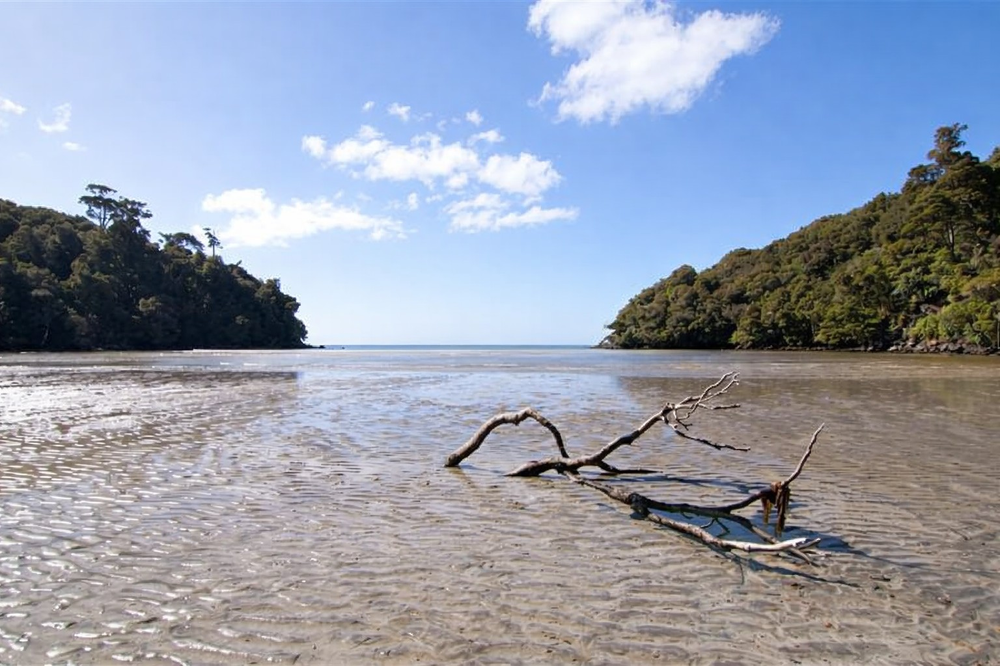

Forest walks & nature trails
Under the canopy, pace slows to the rhythm of roots and light.
Hiking & multi-day routes
Elevation and distance matter less than the pull of the next ridge.


Cycling & trail journeys
Wheels on gravel or smooth trail — the land opens at a rider’s pace.

From movement to rest at your PurePod
After a day on the trail, the best part is still to come. Back at your PurePod, the pace softens, and the journey becomes something quieter, slower, and more immersive.
A warm shower, a soft bed, the last light outside — everything waiting for you.
Discover slow travel